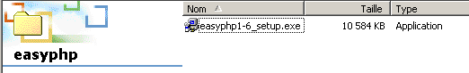

8. Anexos
8.1. Herramientas de desarrollo web
Aquí indicamos dónde encontrar y cómo instalar las herramientas necesarias para el desarrollo web. Algunas herramientas han visto evolucionar sus versiones y es posible que las explicaciones que se dan aquí ya no sean adecuadas para las versiones más recientes. El lector deberá entonces adaptarse... En el curso de programación web, utilizaremos esencialmente las siguientes herramientas, todas ellas disponibles de forma gratuita:
- un navegador reciente capaz de visualizar XML. Los ejemplos del curso se han probado con Internet Explorer 6.
- un JDK (Java Development Kit) reciente. Los ejemplos del curso se han probado con el JDK 1.4. Este JDK incluye el complemento Java 1.4 para navegadores, lo que permite a estos últimos mostrar applets Java que utilicen Java 1.4.
- Un entorno de desarrollo Java para escribir servlets Java. En este caso, se trata de JBuilder 7.
- Servidores web: Apache, PWS (Personal Web Server), Tomcat.
- Apache se utilizará para el desarrollo de aplicaciones web en PERL (Practical Extracting and Reporting Language) o PHP (Personal Home Page)
- PWS se utilizará para el desarrollo de aplicaciones web en ASP (Active Server Pages) o PHP
- Tomcat se utilizará para el desarrollo de aplicaciones web mediante servlets Java o páginas JSP (Java Server Pages)
- una aplicación de gestión de bases de datos: MySQL
- EasyPHP: una herramienta que integra el servidor web Apache, el lenguaje PHP y el SGBD MySQL
8.1.1. Servidores web, navegadores, lenguajes de scripting
- Servidores web principales
- Apache (Linux, Windows)
- Interner Information Server IIS (NT), Personal Web Server PWS (Windows 9x)
- Principales navegadores
- Internet Explorer (Windows)
- Netscape (Linux, Windows)
- Lenguajes de script del lado del servidor
- VBScript (IIS, PWS)
- JavaScript (IIS, PWS)
- Perl (Apache, IIS, PWS)
- PHP (Apache, IIS, PWS)
- Java (Apache, Tomcat)
- Lenguajes .NET
- Lenguajes de script del lado del navegador
- VBScript (IE)
- Javascript (IE, Netscape)
- PerlScript (IE)
- Java (IE, Netscape)
8.1.2. Dónde encontrar las herramientas
http://www.netscape.com/ (enlace de descargas) | |
http://www.microsoft.com/windows/ie/default.asp | |
http://www.php.net http://www.php.net/downloads.php (Binarios de Windows) | |
http://www.activestate.com http://www.activestate.com/Productos/ http://www.activestate.com/Productos/ActivePerl/ | |
http://msdn.microsoft.com/scripting (siga el enlace de Windows Script) | |
http://java.sun.com/ http://java.sun.com/downloads.html (JSE) http://java.sun.com/j2se/1.4/download.html | |
http://www.apache.org/ http://www.apache.org/dist/httpd/binaries/win32/ | |
incluido en NT 4.0 Option paquete para Windows 95 incluido en CD de Windows 98 http://www.microsoft.com/ntserver/nts/downloads/recommended/NT4OptPk/win95.asp | |
http://www.microsoft.com | |
http://jakarta.apache.org/tomcat/ | |
http://www.borland.com/jbuilder/ http://www.borland.com/productos/descargas/descargar_jbuilder.html | |
http://www.easyphp.org/ http://www.easyphp.org/telechargements.php3 |
8.1.3. EasyPHP
Esta aplicación es muy práctica, ya que incluye en un mismo paquete:
- el servidor web Apache (1.3.x)
- el lenguaje PHP (4.x)
- el SGBD MySQL (3.23.x)
- una herramienta de administración de MySQL: PhpMyAdmin
La aplicación de instalación tiene el siguiente aspecto:

La instalación de EasyPHP no presenta problemas y se crea una estructura de directorios en el sistema de archivos:

el ejecutable de la aplicación | |
la estructura de directorios del servidor Apache | |
la estructura de directorios de SGBD mysql | |
la estructura de la aplicación phpmyadmin | |
la estructura de php | |
raíz del árbol de páginas web servidas por el servidor Apache de EasyPHP | |
árbol en el que se pueden colocar scripts CGI para el servidor Apache |
La principal ventaja de EasyPHP es que la aplicación viene preconfigurada. Así, Apache, PHP y MySQL ya están configurados para funcionar juntos. Al iniciar EasyPhp mediante su enlace en el menú de programas, aparece un icono en la parte inferior derecha de la pantalla.
 |
Es la E con un punto rojo la que debe parpadear si el servidor web Apache y la base de datos MySQL están operativos. Al hacer clic con el botón derecho del ratón, se accede a las opciones del menú:

La administración de option permite realizar ajustes y pruebas de funcionamiento:

8.1.3.1. Administración PHP
El botón «Información» php le permite comprobar el correcto funcionamiento del conjunto Apache-PHP: debe aparecer una página de información PHP:

El botón «Extensiones» muestra la lista de extensiones instaladas para php. Se trata, en realidad, de bibliotecas de funciones.

La pantalla anterior muestra, por ejemplo, que las funciones necesarias para utilizar la base de datos MySQL están presentes.
El botón «Parámetros» muestra el nombre de usuario y la contraseña del administrador de la base de datos MySQL.

El uso de la base de datos MySQL excede el alcance de esta breve presentación, pero queda claro aquí que sería necesario establecer una contraseña para el administrador de la base de datos.
8.1.3.2. Administración de Apache
Siempre en la página de administración de EasyPHP, el enlace «sus alias» permite definir alias asociados a un directorio. Esto permite colocar páginas web en otro lugar que no sea el directorio www del árbol de easyPhp.

Si en la página anterior se introduce la siguiente información:

y se utiliza el botón «Validar», se añaden las siguientes líneas al archivo <easyphp>\apache\conf\httpd.conf:
Alias /st/ "e:/data/serge/web/"
<Directory "e:/data/serge/web">
Options FollowSymLinks Indexes
AllowOverride None
Order deny,allow
allow from 127.0.0.1
deny from all
</Directory>
<easyphp> indica el directorio de instalación de EasyPHP. httpd.conf es el archivo de configuración del servidor Apache. Por lo tanto, se puede hacer lo mismo editando directamente este archivo. Normalmente, Apache aplica inmediatamente cualquier modificación del archivo httpd.conf. Si no fuera así, habría que detenerlo y volver a iniciarlo, siempre mediante el icono de easyphp:
Para completar nuestro ejemplo, ahora podemos colocar páginas web en el árbol de directorios e:\data\serge\web:
y solicitar esta página utilizando el alias st:

En este ejemplo, el servidor Apache se ha configurado para funcionar en el puerto 81. Su puerto predeterminado es el 80. Esto se controla mediante la siguiente línea del archivo httpd.conf que ya hemos visto:
8.1.3.3. El archivo de configuración de Apache htpd.conf
Cuando se desea configurar Apache con mayor precisión, es necesario modificar «a mano» su archivo de configuración httpd.conf, ubicado aquí, en la carpeta <easyphp>\apache\conf:

A continuación se indican algunos puntos a tener en cuenta de este archivo de configuración:
función | |
indica la carpeta donde se encuentra el árbol de directorios de Apache | |
indica en qué puerto va a funcionar el servidor web. Normalmente es el 80. Al cambiar esta línea, se puede hacer que el servidor web funcione en otro puerto | |
la dirección de correo electrónico del administrador del servidor Apache | |
el nombre del equipo en el que «funciona» el servidor Apache | |
el directorio de instalación del servidor Apache. Cuando en el archivo de configuración aparecen nombres de archivos relativos, estos son relativos con respecto a esta carpeta. | |
la carpeta raíz del árbol de páginas web servidas por el servidor. Aquí, url http://máquina/rep1/fic1.html corresponderá al archivo E:\Program Files\EasyPHP\www \rep1\fic1.html | |
establece las propiedades de la carpeta anterior | |
carpeta de registros, por lo que en realidad es <ServerRoot>\logs\error.log: E:\Program Files\EasyPHP\apache\logs\error.log. Este es el archivo que debe consultar si observa que el servidor Apache no funciona. | |
E:\Archivos de programa\EasyPHP\cgi-bin será la raíz del árbol de directorios donde se podrán colocar los scripts CGI. Así, el URL http://máquina/cgi-bin/rep1/script1.pl será el url del script CGI E:\Archivos de programa\EasyPHP\cgi-bin \rep1\script1.pl. | |
establece las propiedades de la carpeta anterior | |
líneas de carga de los módulos que permiten a Apache trabajar con PHP4. | |
Establece los sufijos de los archivos que deben considerarse como archivos que deben ser procesados por PHP |
8.1.3.4. Administración de MySQL con PhpMyAdmin
En la página de administración de EasyPhp, haga clic en el botón PhpMyAdmin:

El menú desplegable en Inicio permite ver las bases de actuales. |  |
El número entre paréntesis es el número de tablas. Si selecciona una base de datos, se muestran las tablas de la misma: |  |
La página web ofrece una serie de operaciones sobre la base de datos:

Si se hace clic en el enlace «Ver de usuario»:

Aquí solo hay un usuario: root, que es el administrador de MySQL. Al seguir el enlace «Modificar», se podría cambiar su contraseña, que actualmente está vacía, lo cual no es recomendable para un administrador.
No diremos nada más sobre PhpMyAdmin, que es un software muy completo y que merecería una explicación de varias páginas.
8.1.4. PHP
Hemos visto cómo obtener PHP a través de la aplicación EasyPhp. Para obtener PHP directamente, iremos a la página web http://www.php.net.
PHP no solo se puede utilizar en el ámbito web. También se puede utilizar como lenguaje de scripts en Windows. Cree el siguiente script y guárdelo con el nombre date.php:
<?
// script php que muestra la hora
$maintenant=date("j/m/y, H:i:s",time());
echo "Nous sommes le $maintenant";
?>
En una ventana DOS, vaya al directorio de fecha.php y ejecútelo:
E:\data\serge\php\essais>"e:\program files\easyphp\php\php.exe" date.php
X-Powered-By: PHP/4.2.0
Content-type: text/html
Nous sommes le 18/07/02, 09:31:01
8.1.5. PERL
Es preferible que Internet Explorer ya esté instalado. Si está presente, Active Perl lo configurará para que acepte scripts PERL en las páginas HTML, scripts que serán ejecutados por el propio IE en el lado del cliente. El sitio web de Active Perl se encuentra en URL http://www.activestate.comA. Tras la instalación, PERL se instalará en un directorio que llamaremos <perl>. Contiene la siguiente estructura de directorios:
DEISL1 ISU 32 403 23/06/00 17:16 DeIsL1.isu
BIN <REP> 23/06/00 17:15 bin
LIB <REP> 23/06/00 17:15 lib
HTML <REP> 23/06/00 17:15 html
EG <REP> 23/06/00 17:15 eg
SITE <REP> 23/06/00 17:15 site
HTMLHELP <REP> 28/06/00 18:37 htmlhelp
El ejecutable perl.exe se encuentra en <perl>\bin. Perl es un lenguaje de scripting que funciona en Windows y Unix. Además, se utiliza en la programación de WEB. Escribamos un primer script:
# script PERL que muestra la hora
# módulos
use strict;
# programa
my ($secondes,$minutes,$heure)=localtime(time);
print "Il est $heure:$minutes:$secondes\n";
Guarde este script en un archivo heure.pl. Abra una ventana DOS, vaya al directorio del script anterior y ejecútelo:
8.1.6. Vbscript, Javascript, Perlscript
Estos lenguajes son lenguajes de script para Windows. Pueden funcionar en diferentes entornos, como
- Windows Scripting Host para su uso directo en Windows, especialmente para escribir scripts de administración del sistema
- Internet Explorer. En este caso, se utiliza dentro de páginas HTML a las que aporta una cierta interactividad imposible de lograr solo con el lenguaje HTML.
- Internet Information Server (IIS), el servidor web de Microsoft en NT/2000, y su equivalente Personal Web Server (PWS) en Win9x. En este caso, vbscript se utiliza para la programación del lado del servidor web, tecnología denominada ASP (Active Server Pages) por Microsoft.
Se descarga el archivo de instalación en URL: http://msdn.microsoft.com/scripting y se siguen los enlaces de Windows Script. Se instalan:
- el contenedor Windows Scripting Host, que permite el uso de diversos lenguajes de script, como Vbscript y Javascript, pero también otros como PerlScript, que viene incluido con Active Perl.
- un intérprete VBscript
- un intérprete Javascript
Veamos algunas pruebas rápidas. Creemos el siguiente programa vbscript:
' una clase
class personne
Dim nom
Dim age
End class
' creación de un objeto persona
Set p1=new personne
With p1
.nom="dupont"
.age=18
End With
' visualización de las propiedades de la persona p1
With p1
wscript.echo "nom=" & .nom
wscript.echo "age=" & .age
End With
Este programa utiliza objetos. Llamémoslo objets.vbs (el sufijo «vbs» indica que se trata de un archivo vbscript). Vamos al directorio en el que se encuentra y ejecutémoslo:
E:\data\serge\windowsScripting\vbscript\poly\objets>cscript objets.vbs
Microsoft (R) Windows Script Host Version 5.6
Copyright (C) Microsoft Corporation 1996-2001. All rights reserved.
nom=dupont
age=18
Ahora vamos a crear el siguiente programa javascript que utiliza matrices:
// tabla en una variante
// matriz vacía
tableau=new Array();
affiche(tableau);
// tabla que crece dinámicamente
for(i=0;i<3;i++){
tableau.push(i*10);
}
// Visualización de tabla
affiche(tableau);
// otra vez
for(i=3;i<6;i++){
tableau.push(i*10);
}
affiche(tableau);
// tablas multidimensionales
WScript.echo("-----------------------------");
tableau2=new Array();
for(i=0;i<3;i++){
tableau2.push(new Array());
for(j=0;j<4;j++){
tableau2[i].push(i*10+j);
}//for j
}// for i
affiche2(tableau2);
// fin
WScript.quit(0);
// ---------------------------------------------------------
function affiche(tableau){
// visualización de tabla
for(i=0;i<tableau.length;i++){
WScript.echo("tableau[" + i + "]=" + tableau[i]);
}//para
}//función
// ---------------------------------------------------------
function affiche2(tableau){
// visualización de tabla
for(i=0;i<tableau.length;i++){
for(j=0;j<tableau[i].length;j++){
WScript.echo("tableau[" + i + "," + j + "]=" + tableau[i][j]);
}// for j
}//para i
}//función
Este programa utiliza tablas. Llamémoslo tablas.js (el sufijo js designa un archivo javascript). Vayamos al directorio en el que se encuentra y ejecutémoslo:
E:\data\serge\windowsScripting\javascript\poly\tableaux>cscript tableaux.js
Microsoft (R) Windows Script Host Version 5.6
Copyright (C) Microsoft Corporation 1996-2001. Tous droits réservés.
tableau[0]=0
tableau[1]=10
tableau[2]=20
tableau[0]=0
tableau[1]=10
tableau[2]=20
tableau[3]=30
tableau[4]=40
tableau[5]=50
-----------------------------
tableau[0,0]=0
tableau[0,1]=1
tableau[0,2]=2
tableau[0,3]=3
tableau[1,0]=10
tableau[1,1]=11
tableau[1,2]=12
tableau[1,3]=13
tableau[2,0]=20
tableau[2,1]=21
tableau[2,2]=22
tableau[2,3]=23
Un último ejemplo en Perlscript para terminar. Es necesario tener instalado Active Perl para poder acceder a Perlscript.
<job id="PERL1">
<script language="PerlScript">
# de Perl clásico
%dico=("maurice"=>"juliette","philippe"=>"marianne");
@cles= keys %dico;
for ($i=0;$i<=$#claves;$i++){
$cle=$cles[$i];
$valeur=$dico{$cle};
$WScript->echo ("clé=".$cle.", valeur=".$valeur);
}
# de PerlScript utilizando objetos de Windows Script
$dico=$WScript->CreateObject("Scripting.Dictionary");
$dico->add("maurice","juliette");
$dico->add("philippe","marianne");
$WScript->echo($dico->item("maurice"));
$WScript->echo($dico->item("philippe"));
</script>
</job>
Este programa muestra la creación y el uso de dos diccionarios: uno al estilo clásico de Perl y otro con el objeto Scripting Dictionary de Windows Script. Guardemos este código en el archivo dico.wsf (wsf es la extensión de los archivos de Windows Script). Vayamos a la carpeta de este programa y ejecutémoslo:
E:\data\serge\windowsScripting\perlscript\essais>cscript dico.wsf
Microsoft (R) Windows Script Host Version 5.6
Copyright (C) Microsoft Corporation 1996-2001. Tous droits réservés.
clé=philippe, valeur=marianne
clé=maurice, valeur=juliette
juliette
marianne
Perlscript puede utilizar los objetos del contenedor en el que se ejecuta. En este caso, se trataba de objetos del contenedor Windows Script. En el contexto de la programación web, los scripts VBscript, Javascript, Perlscript pueden ejecutarse tanto en el navegador IE como en un servidor PWS o IIS. Si el script es un poco complejo, puede ser conveniente probarlo fuera del contexto web, dentro del contenedor Windows Script, tal y como se ha visto anteriormente. De este modo, solo se podrán probar las funciones del script que no utilicen objetos propios del navegador o del servidor. Incluso con esta restricción, esta posibilidad sigue siendo interesante, ya que, por lo general, resulta bastante poco práctico depurar scripts que se ejecutan en servidores web o navegadores.
8.1.7. JAVA
Java está disponible en URL: http://www.sun.com y se instala en un árbol de directorios que llamaremos <java>, que contiene los siguientes elementos:
22/05/2002 05:51 <DIR> .
22/05/2002 05:51 <DIR> ..
22/05/2002 05:51 <DIR> bin
22/05/2002 05:51 <DIR> jre
07/02/2002 12:52 8 277 README.txt
07/02/2002 12:52 13 853 LICENSE
07/02/2002 12:52 4 516 COPYRIGHT
07/02/2002 12:52 15 290 readme.html
22/05/2002 05:51 <DIR> lib
22/05/2002 05:51 <DIR> include
22/05/2002 05:51 <DIR> demo
07/02/2002 12:52 10 377 848 src.zip
11/02/2002 12:55 <DIR> docs
En bin, encontraremos javac.exe, el compilador Java, y java.exe, la máquina virtual Java. Podemos realizar las siguientes pruebas:
- Escribir el siguiente script:
//programa Java que muestra la hora
import java.io.*;
import java.util.*;
public class heure{
public static void main(String arg[]){
// se recuperan la fecha y la hora
Date maintenant=new Date();
// se muestra
System.out.println("Il est "+maintenant.getHours()+
":"+maintenant.getMinutes()+":"+maintenant.getSeconds());
}//main
}//clase
- Guarde este programa con el nombre heure.java. Abra una ventana DOS. Vaya al directorio del archivo heure.java y compílelo:
D:\data\java\essais>c:\jdk1.3\bin\javac heure.java
Note: heure.java uses or overrides a deprecated API.
Note: Recompile with -deprecation for details.
En el comando anterior, c:\jdk1.3\bin\javac debe sustituirse por la ruta exacta del compilador javac.exe. Debe obtener, en el mismo directorio que heure.java, un archivo heure.class, que es el programa que ahora ejecutará la máquina virtual java.exe.
- Ejecute el programa:
8.1.8. Servidor Apache
Hemos visto que se puede obtener el servidor Apache con la aplicación EasyPhp. Para conseguirlo directamente, iremos al sitio web de Apache: http://www.apache.org. La instalación crea un árbol de directorios donde se encuentran todos los archivos necesarios para el servidor. Llamemos a este directorio <apache>. Contiene un árbol de directorios similar al siguiente:
UNINST ISU 118 805 23/06/00 17:09 Uninst.isu
HTDOCS <REP> 23/06/00 17:09 htdocs
APACHE~1 DLL 299 008 25/02/00 21:11 ApacheCore.dll
ANNOUN~1 3 000 23/02/00 16:51 Announcement
ABOUT_~1 13 197 31/03/99 18:42 ABOUT_APACHE
APACHE EXE 20 480 25/02/00 21:04 Apache.exe
KEYS 36 437 20/08/99 11:57 KEYS
LICENSE 2 907 01/01/99 13:04 LICENSE
MAKEFI~1 TMP 27 370 11/01/00 13:47 Makefile.tmpl
README 2 109 01/04/98 6:59 README
README NT 3 223 19/03/99 9:55 README.NT
WARNIN~1 TXT 339 21/09/98 13:09 WARNING-NT.TXT
BIN <REP> 23/06/00 17:09 bin
MODULES <REP> 23/06/00 17:09 modules
ICONS <REP> 23/06/00 17:09 icons
LOGS <REP> 23/06/00 17:09 logs
CONF <REP> 23/06/00 17:09 conf
CGI-BIN <REP> 23/06/00 17:09 cgi-bin
PROXY <REP> 23/06/00 17:09 proxy
INSTALL LOG 3 779 23/06/00 17:09 install.log
carpeta de archivos de configuración de Apache | |
carpeta de archivos de registro (seguimiento) de Apache | |
los ejecutables de Apache |
8.1.8.1. Configuración
En la carpeta <Apache>\conf se encuentran los siguientes archivos: httpd.conf, srm.conf, access.conf. En las últimas versiones de Apache, los tres archivos se han fusionado en httpd.conf. Ya hemos presentado los puntos importantes de este archivo de configuración. En los ejemplos siguientes se ha utilizado para las pruebas el Apache version de EasyPhp y, por lo tanto, su archivo de configuración. En este, DocumentRoot, que designa la raíz del árbol de páginas web, es e:\program files\easyphp\www.
8.1.8.2. Enlace PHP - Apache
Para realizar la prueba, cree el archivo intro.php con la siguiente línea:
<? phpinfo() ?>
y colóquelo en la raíz de las páginas del servidor Apache (DocumentRoot arriba). Acceda a URL http://localhost/intro.php. Debería aparecer una lista de información php:

El siguiente script PHP muestra la hora. Ya lo hemos visto antes:
<?php
// tiempo: número de milisegundos desde el 01/01/1970
// «formato de visualización de fecha y hora
// d: día en 2 dígitos
// m: mes en 2 dígitos
// y: año en dos dígitos
// H: hora 0,23
// i: minutos
// s: segundos
print "Nous sommes le " . date("d/m/y H:i:s",time());
?>
Colocamos este archivo de texto en la raíz de las páginas del servidor Apache (DocumentRoot) y lo llamamos date.php. Accedamos con un navegador a URL http://localhost/date.php. Obtendremos la siguiente página:

8.1.8.3. Enlace PERL-APACHE
Se crea mediante una línea del tipo: ScriptAlias /cgi-bin/ "E:/Program Files/EasyPHP/cgi-bin/" del archivo <apache>\conf\httpd.conf. Su sintaxis es ScriptAlias /cgi-bin/ "<cgi-bin>", donde <cgi-bin> es la carpeta en la que se pueden colocar los scripts CGI. CGI (Common Gateway Interface) es un estándar de comunicación entre el servidor WEB y las aplicaciones. Un cliente solicita al servidor web una página dinámica, c.a.d, es decir, una página generada por un programa. Por lo tanto, el servidor WEB debe solicitar a un programa que genere la página. CGI define la comunicación entre el servidor y el programa, en particular el modo de transmisión de la información entre estas dos entidades.
Si es necesario, modifique la línea ScriptAlias /cgi-bin/ «<cgi-bin>» y reinicie el servidor Apache. A continuación, realice la siguiente prueba:
- Escriba el script:
#!c:\perl\bin\perl.exe
# script PERL que muestra la hora
# módulos
use strict;
# programa
my ($secondes,$minutes,$heure)=localtime(time);
print <<FINHTML
Content-Type: text/html
<html>
<head>
<title>heure</title>
</head>
<body>
<h1>Il est $heure:$minutes:$secondes</h1>
</body>
FINHTML
;
- Coloque este script en <cgi-bin>\heure.pl, donde <cgi-bin> es la carpeta que puede alojar scripts CGI (véase httpd.conf). La primera línea #!c:\perl\bin\perl.exe indica la ruta del ejecutable perl.exe. Modifíquela si es necesario.
- Inicie Apache si aún no lo ha hecho
- Acceda con un navegador a URL http://localhost/cgi-bin/heure.pl. Se obtiene la siguiente página:

8.1.9. El servidor PWS
8.1.9.1. Instalación
El servidor PWS (Personal Web Server) es una versión personalizada del servidor version de Microsoft (Internet Information Server). Este último está disponible en los equipos con Windows 2000. En los equipos con Win9x, PWS suele estar disponible con el paquete de instalación de Internet Explorer. Sin embargo, no se instala de forma predeterminada. Es necesario realizar una instalación personalizada de IE y solicitar la instalación de PWS. Además, está disponible en el paquete NT 4.0 Option para Windows 95.
8.1.9.2. Primeras pruebas
La raíz de las páginas web del servidor PWS es unidad:\inetpub\wwwroot, donde unidad es el disco en el que ha instalado PWS. Suponemos a continuación que esta unidad es D. Así, url http://máquina/rep1/página1.html corresponderá al archivo d:\inetpub\wwwroot\rep1\page1.html. El servidor PWS interpreta cualquier archivo con la extensión .asp (Active Server Pages) como un script que debe ejecutar para generar una página HTML.
PWS funciona por defecto en el puerto 80. El servidor web Apache también... Por lo tanto, hay que detener Apache para trabajar con PWS si se tienen ambos servidores. La otra solución es configurar Apache para que funcione en otro puerto. Así, en el archivo de configuración de Apache httpd.conf, se sustituye la línea Port 80 por Port 81; a partir de ese momento, Apache funcionará en el puerto 81 y podrá utilizarse al mismo tiempo que PWS. Si se ha iniciado PWS y se solicita URL http://localhost, se obtiene una página similar a la siguiente:

8.1.9.3. Enlace PHP - PWS
- A continuación encontrará un archivo .reg destinado a modificar el registro. Haga doble clic en este archivo para modificar el registro. Aquí, el archivo DLL necesario se encuentra en d:\php4 junto con el ejecutable de php. Modifíquelo si es necesario. Las barras \ deben duplicarse en la ruta de la DLL.
REGEDIT4
[HKEY_LOCAL_MACHINE\SYSTEM\CurrentControlSet\Services\w3svc\parameters\Script Map]
".php"="d:\\php4\\php4isapi.dll"
- Reinicie el equipo para que se apliquen los cambios en el Registro.
- Cree una carpeta php en d:\inetpub\wwwroot, que es la raíz del servidor PWS. Una vez hecho esto, active PWS y vaya a la pestaña «Avanzado». Seleccione el botón «Añadir» para crear una carpeta virtual:
- Confirme los cambios y vuelva a ejecutar PWS. Coloque en d:\inetpub\wwwroot\php el archivo intro.php, que contiene únicamente la siguiente línea:
- Solicitar al servidor PWS el URL http://localhost/php/intro.php. Debería aparecer la lista de información php ya mostrada con Apache.
8.1.10. Tomcat: servlets Java y páginas JSP (Java Server Pages)
Tomcat es un servidor web que permite generar páginas HTML mediante servlets (programas Java ejecutados por el servidor web) o páginas JSP (Java Server Pages), páginas que combinan código Java y código HTML. Es el equivalente a las páginas ASP (Active Server Pages) del servidor IIS/PWS de Microsoft, donde se mezcla código VBScript o Javascript con código HTML.
8.1.10.1. Instalación
Tomcat está disponible en la dirección URL: http://jakarta.apache.org. Se descarga un archivo .exe de instalación. Al ejecutar este programa, lo primero que indica es qué JDK va a utilizar. De hecho, Tomcat necesita un JDK para instalarse y, posteriormente, compilar y ejecutar los servlets Java. Por lo tanto, es necesario que haya instalado un JDK Java antes de instalar Tomcat. Se recomienda el JD más reciente. La instalación creará un árbol de directorios <tomcat>:

consiste simplemente en descomprimir este archivo en un directorio. Elija un directorio cuya ruta contenga únicamente nombres sin espacios (por ejemplo, no «Archivos de programa»), ya que existe un error en el proceso de instalación de Tomcat. Elija, por ejemplo, C:\tomcat o D:\tomcat. Llamemos a este directorio <tomcat>. En él encontrará una carpeta llamada jakarta-tomcat y, dentro de esta, la siguiente estructura:
LOGS <REP> 15/11/00 9:04 logs
LICENSE 2 876 18/04/00 15:56 LICENSE
CONF <REP> 15/11/00 8:53 conf
DOC <REP> 15/11/00 8:53 doc
LIB <REP> 15/11/00 8:53 lib
SRC <REP> 15/11/00 8:53 src
WEBAPPS <REP> 15/11/00 8:53 webapps
BIN <REP> 15/11/00 8:53 bin
WORK <REP> 15/11/00 9:04 work
8.1.10.2. Inicio/Parada del servidor web Tomcat
Tomcat es un servidor web, al igual que Apache o PWS. Para iniciarlo, hay enlaces disponibles en el menú de programas:
para iniciar Tomcat | |
para detenerlo |
Al iniciar Tomcat, aparece una ventana de DOS con el siguiente contenido:

Se puede minimizar esta ventana de DOS. Permanecerá abierta mientras Tomcat esté activo. A continuación, se pueden realizar las primeras pruebas. El servidor web Tomcat funciona en el puerto 8080. Una vez iniciado Tomcat, abra un navegador web y acceda a URL http://localhost:8080. Debería aparecer la siguiente página:

Siga el enlace «Servlet Examples»:

Haga clic en el enlace «Execute» de RequestParameters y, a continuación, en el de «Source». Obtendrá una primera visión general de lo que es un servlet Java. Podrá hacer lo mismo con los enlaces de las páginas JSP.
Para detener Tomcat, utilice el enlace «Stop Tomcat» del menú de programas.
8.1.11. Jbuilder
Jbuilder es un entorno de desarrollo de aplicaciones Java. Para crear servlets Java en los que no hay interfaces gráficas, no es imprescindible disponer de un entorno de este tipo. Un editor de texto y un JDK son suficientes. Sin embargo, JBuilder aporta algunas ventajas adicionales con respecto a la técnica anterior:
- facilidad de depuración: el compilador señala las líneas erróneas de un programa y es fácil situarse en ellas
- sugerencias de código: cuando se utiliza un objeto Java, JBuilder muestra en línea la lista de sus propiedades y métodos. Esto resulta muy práctico, ya que la mayoría de los objetos Java tienen numerosas propiedades y métodos que son difíciles de recordar.
JBuilder se encuentra en el sitio web http://www.borland.com/jbuilder. Hay que rellenar un formulario para obtener el software. Se envía una clave de activación por correo electrónico. Para instalar JBuilder 7, se procedió, por ejemplo, de la siguiente manera:
- se obtuvieron tres archivos zip: para la aplicación, para la documentación y para los ejemplos. Cada uno de estos archivos zip tiene un enlace independiente en el sitio web de JBuilder.
- Primero se instaló la aplicación, luego la documentación y, por último, los ejemplos
- al iniciar la aplicación por primera vez, se solicita una clave de activación: es la que se le ha enviado por correo electrónico. En version 7, esta clave es, de hecho, un archivo de texto completo que se puede colocar, por ejemplo, en la carpeta de instalación de JB7. En el momento en que se solicita la clave, se indica el archivo en cuestión. Una vez hecho esto, no se volverá a solicitar la clave.
Hay algunas configuraciones útiles que hay que realizar si se quiere utilizar JBuilder para crear servlets Java. De hecho, el version, denominado Jbuilder personal, es una versión reducida de version que, en particular, no incluye todas las clases necesarias para el desarrollo web en Java. Se puede hacer que JBuilder utilice las bibliotecas de clases que aporta Tomcat. Para ello, se procede de la siguiente manera:
- ejecutar JBuilder

- activar option en Tools/Configure JDKs

En la sección JDK Settings anterior, normalmente aparece en el campo Name un JDK 1.3.1. Si dispone de una versión más reciente de JDK, utilice el botón «Change» para indicar el directorio de instalación de esta última. Arriba, se ha designado el directorio E:\Program Files\jdk14 donde se había instalado un JDK 1.4. A partir de ahora, JBuilder utilizará este JDK para sus compilaciones y ejecuciones. En la sección (Class, Source, Documentation) se muestra la lista de todas las bibliotecas de clases que JBuilder explorará; en este caso, las clases de JDK 1.4. Las clases de este último no son suficientes para desarrollar aplicaciones web en Java. Para añadir otras bibliotecas de clases, se utiliza el botón «Add» y se seleccionan los archivos .jar adicionales que se deseen utilizar. Los archivos .jar son bibliotecas de clases. Tomcat 4.x incluye todas las bibliotecas de clases necesarias para el desarrollo web. Se encuentran en <tomcat>\common\lib, donde <tomcat> es el directorio de instalación de Tomcat:

Con el botón Add, añadiremos estas bibliotecas, una a una, a la lista de bibliotecas exploradas por JBuilder:

A partir de ahora, podemos compilar programas Java conformes con el estándar J2EE, en particular los servlets Java. JBuilder solo sirve para la compilación, ya que la ejecución la realiza posteriormente Tomcat según las modalidades explicadas en el curso.
8.2. Código fuente de los programas
8.2.1. El cliente genérico TCP
Muchos de los servicios creados en los inicios de Internet funcionan según el modelo del servidor de eco estudiado anteriormente: los intercambios cliente-servidor se realizan mediante el intercambio de líneas de texto. Vamos a escribir un cliente tcp genérico que se iniciará de la siguiente manera: java cltTCPgenerique servidor puerto
Este cliente TCP se conectará al puerto del servidor. Una vez hecho esto, creará dos subprocesos:
- un subproceso encargado de leer los comandos introducidos con el teclado y enviarlos al servidor
- un subproceso encargado de leer las respuestas del servidor y mostrarlas en pantalla
¿Por qué dos hilos? Cada servicio TCP-IP tiene su propio protocolo y, en ocasiones, se dan las siguientes situaciones:
- el cliente debe enviar varias líneas de texto antes de recibir una respuesta
- la respuesta de un servidor puede contener varias líneas de texto
Por lo tanto, el bucle de envío de una sola línea al servidor y recepción de una sola línea enviada por el servidor no siempre es adecuado. Por lo tanto, crearemos dos bucles independientes:
- un bucle de lectura de los comandos tecleados para enviarlos al servidor. El usuario indicará el final de los comandos con la palabra clave «fin».
- un bucle de recepción y visualización de las respuestas del servidor. Este será un bucle infinito que solo se interrumpirá cuando el servidor cierre el flujo de red o cuando el usuario teclee el comando «fin».
Para tener estos dos bucles independientes, necesitamos dos subprocesos independientes. Veamos un ejemplo de ejecución en el que nuestro cliente genérico tcp se conecta a un servicio SMTP (SendMail Transfer Protocol). Este servicio se encarga de enviar el correo electrónico a sus destinatarios. Funciona en el puerto 25 y utiliza un protocolo de comunicación de tipo intercambio de líneas de texto.
Dos>java clientTCPgenerique istia.univ-angers.fr 25
Commandes :
<-- 220 istia.univ-angers.fr ESMTP Sendmail 8.11.6/8.9.3; Lun, 13 de mayo de 2002 08:37:26 +0200
help
<-- 502 5.3.0 Sendmail 8.11.6 -- HELP not implementado
mail from: machin@univ-angers.fr
<-- 250 2.1.0 machin@univ-angers.fr... Remitente ok
rcpt to: serge.tahe@istia.univ-angers.fr
<-- 250 2.1.5 serge.tahe@istia.univ-angers.fr... Destinatario ok
data
<-- 354 Introduzca el correo electrónico, terminando con «.» en una línea separada
Subject: test
ligne1
ligne2
ligne3
.
<-- 250 2.0.0 g4D6bks25951 Mensaje aceptado para su entrega
quit
<-- 221 2.0.0 istia.univ-angers.fr cerrando conexión
[fin du thread de lecture des réponses du serveur]
fin
[fin du thread d'envoi des commandes au serveur]
Comentemos estos intercambios entre cliente y servidor:
- el servicio SMTP envía un mensaje de bienvenida cuando un cliente se conecta a él:
- Algunos servicios disponen de un comando «help» que proporciona información sobre los comandos que se pueden utilizar con el servicio. En este caso no es así. Los comandos SMTP utilizados en el ejemplo son los siguientes:
- mail from: remitente, para indicar la dirección de correo electrónico del remitente del mensaje
- rcpt to: destinatario, para indicar la dirección de correo electrónico del destinatario del mensaje. Si hay varios destinatarios, se reenvía tantas veces como sea necesario el comando rcpt to: para cada uno de los destinatarios.
- data, que indica al servidor SMTP que se va a enviar el mensaje. Tal y como se indica en la respuesta del servidor, esta es una secuencia de líneas que termina con una línea que contiene únicamente el carácter punto. Un mensaje puede tener encabezados separados del cuerpo del mensaje por una línea en blanco. En nuestro ejemplo, hemos puesto un asunto con la palabra clave Subject:
- una vez enviado el mensaje, se puede indicar al servidor que se ha terminado con el comando quit. El servidor cierra entonces la conexión de red. El hilo de lectura puede detectar este evento y detenerse.
- A continuación, el usuario pulsa «fin» en el teclado para detener también el hilo de lectura de los comandos introducidos con el teclado.
Si comprobamos el correo recibido, tenemos lo siguiente (Outlook):

Cabe señalar que el servicio SMTP no puede detectar si un remitente es válido o no. Por lo tanto, nunca se puede confiar en el campo «from» de un mensaje. En este caso, el remitente machin@univ-angers.fr no existía.
Este cliente genérico tcp nos permite descubrir el protocolo de diálogo de los servicios de Internet y, a partir de ahí, crear clases especializadas para los clients de dichos servicios. Descubramos el protocolo de comunicación del servicio POP (Post Office Protocol), que permite recuperar los correos electrónicos almacenados en un servidor. Funciona en el puerto 110.
Dos> java clientTCPgenerique istia.univ-angers.fr 110
Commandes :
<-- +OK Qpopper (version 4.0.3) en istia.univ-angers.fr iniciándose.
help
<-- -ERR Desconocido command: «ayuda».
user st
<-- +OK Se requiere contraseña para st.
pass monpassword
<-- +OK st tiene 157 mensajes visibles (0 ocultos) en 11755927 bytes.
list
<-- +OK 157 mensajes visibles (11755927 bytes)
<-- 1 892847
<-- 2 171661
...
<-- 156 2843
<-- 157 2796
<-- .
retr 157
<-- +OK 2796 bytes
<-- Recibido: de lagaffe.univ-angers.fr (lagaffe.univ-angers.fr [193.49.144.1])
<-- por istia.univ-angers.fr (8.11.6/8.9.3) con ESMTP id g4D6wZs26600;
<-- Lunes, 13 de mayo de 2002 08:58:35 +0200
<-- Recibido: de jaume ([193.49.146.242])
<-- por lagaffe.univ-angers.fr (8.11.1/8.11.2/GeO20000215) con SMTP id g4D6wSd37691;
<-- Lunes, 13 de mayo de 2002 08:58:28 +0200 (CEST)
...
<-- ------------------------------------------------------------------------
<-- NOC-RENATER2 Tel. : 0800 77 47 95
<-- Fax: (+33) 01 40 78 64 00 , Correo electrónico: noc-r2@cssi.renater.fr
<-- ------------------------------------------------------------------------
<--
<-- .
quit
<-- +OK Servidor Pop en istia.univ-angers.fr cerrando sesión.
[fin du thread de lecture des réponses du serveur]
fin
[fin du thread d'envoi des commandes au serveur]
Los comandos principales son los siguientes:
- user login, donde se introduce el nombre de usuario en el servidor que aloja nuestros correos electrónicos
- pass password, donde se introduce la contraseña asociada al nombre de usuario anterior
- list, para obtener la lista de mensajes en formato número, tamaño en bytes
- retr i, para leer el mensaje n.º i
- quit, para salir del diálogo.
Veamos ahora el protocolo de comunicación entre un cliente y un servidor web que suele funcionar en el puerto 80:
Dos> java clientTCPgenerique istia.univ-angers.fr 80
Commandes :
GET /index.html HTTP/1.0
<-- HTTP/1.1 200 OK
<-- Fecha: lunes, 13 de mayo de 2002 07:30:58 GMT
<-- Servidor: Apache/1.3.12 (Unix) (Red Hat/Linux) PHP/3.0.15 mod_perl/1.21
<-- Last-Modified: Mié, 06 feb 2002 09:00:58 GMT
<-- ETag: «23432-2bf3-3c60f0ca»
<-- Accept-Ranges: bytes
<-- Content-Length: 11251
<-- Conexión: cerrar
<-- Tipo de contenido: text/html
<--
<-- <html>
<--
<-- <head>
<-- <meta http-equiv="Content-Type"
<-- content="text/html; charset=iso-8859-1">
<-- <meta name="GENERATOR" content="Microsoft FrontPage Express 2.0">
<-- <title>Bienvenido a ISTIA - Universidad de Angers</title>
<-- </head>
....
<-- face="Verdana"> - Última actualización el <b>10 de enero de 2002</b></font></p>
<-- </body>
<-- </html>
<--
[fin du thread de lecture des réponses du serveur]
fin
[fin du thread d'envoi des commandes au serveur]
Un cliente web envía sus comandos al servidor según el siguiente esquema:
El servidor web solo responde tras recibir la línea vacía. En el ejemplo solo hemos utilizado un comando:
que solicita al servidor el URL /index.html e indica que trabaja con el protocolo HTTP version 1.0. La versión más reciente de este protocolo es la 1.1. El ejemplo muestra que el servidor respondió enviando el contenido del archivo index.html y, a continuación, cerró la conexión, ya que se observa que el hilo de lectura de respuestas finaliza. Antes de enviar el contenido del archivo index.html, el servidor web envió una serie de encabezados que terminaban en una línea en blanco:
<-- HTTP/1.1 200 OK
<-- Fecha: lunes, 13 de mayo de 2002 07:30:58 GMT
<-- Servidor: Apache/1.3.12 (Unix) (Red Hat/Linux) PHP/3.0.15 mod_perl/1.21
<-- Last-Modified: Mié, 06 feb 2002 09:00:58 GMT
<-- ETag: «23432-2bf3-3c60f0ca»
<-- Accept-Ranges: bytes
<-- Content-Length: 11251
<-- Conexión: cerrar
<-- Tipo de contenido: texto/html
<--
<-- <html>
La línea <html> es la primera línea del archivo /index.html. Lo anterior se denomina encabezados HTTP (Protocolo de transferencia HyperText). No vamos a detallar aquí estos encabezados, pero recordaremos que nuestro cliente genérico permite acceder a ellos, lo que puede resultar útil para comprenderlos. La primera línea, por ejemplo:
indica que el servidor web contactado entiende el protocolo HTTP/1.1 y que ha encontrado correctamente el archivo solicitado (200 OK), siendo 200 un código de respuesta HTTP. Las líneas
indican al cliente que va a recibir 11251 bytes que representan el texto HTML (HyperText Markup Language) y que, al finalizar el envío, se cerrará la conexión.
Así pues, tenemos aquí un cliente tcp muy práctico. Sin duda hace menos que el programa telnet oficial, pero ha sido interesante escribirlo nosotros mismos. El programa del cliente tcp genérico es el siguiente:
// paquetes importados
import java.io.*;
import java.net.*;
public class clientTCPgenerique{
// recibe como parámetro las características de un servicio en el formato
// servidor puerto
// se conecta al servicio
// crea un subproceso para leer los comandos introducidos mediante el teclado
// estas se enviarán al servidor
// crea un subproceso para leer las respuestas del servidor
// estas se mostrarán en pantalla
// todo termina con el comando «fin» introducido mediante el teclado
// variable de instancia
private static Socket client;
public static void main(String[] args){
// sintaxis
final String syntaxe="pg serveur port";
// número de argumentos
if(args.length != 2)
erreur(syntaxe,1);
// se anota el nombre del servidor
String serveur=args[0];
// el puerto debe ser un número entero >0
int port=0;
boolean erreurPort=false;
Exception E=null;
try{
port=Integer.parseInt(args[1]);
}catch(Exception e){
E=e;
erreurPort=true;
}
erreurPort=erreurPort || port <=0;
if(erreurPort)
erreur(syntaxe+"\n"+"Port incorrect ("+E+")",2);
client=null;
// pueden surgir problemas
try{
// se conecta al servicio
client=new Socket(serveur,port);
}catch(Exception ex){
// error
erreur("Impossible de se connecter au service ("+ serveur
+","+port+"), erreur : "+ex.getMessage(),3);
// fin
return;
}//catch
// se crean los subprocesos de lectura/escritura
new ClientSend(client).start();
new ClientReceive(client).start();
// fin del hilo principal
return;
}// main
// visualización de errores
public static void erreur(String msg, int exitCode){
// visualización de error
System.err.println(msg);
// parada con error
System.exit(exitCode);
}//error
}//clase
class ClientSend extends Thread {
// clase encargada de leer los comandos introducidos mediante el teclado
// y enviarlos a un servidor a través de un cliente tcp pasado como parámetro
private Socket client; // el cliente tcp
// constructor
public ClientSend(Socket client){
// se toma nota del cliente tcp
this.client=client;
}//constructor
// método Run del hilo
public void run(){
// datos locales
PrintWriter OUT=null; // flujo de escritura de red
BufferedReader IN=null; // flujo de teclado
String commande=null; // comando leído en el teclado
// gestión de errores
try{
// creación del flujo de escritura de red
OUT=new PrintWriter(client.getOutputStream(),true);
// creación del flujo de entrada del teclado
IN=new BufferedReader(new InputStreamReader(System.in));
// bucle de introducción y envío de comandos
System.out.println("Commandes : ");
while(true){
// lectura del comando introducido por teclado
commande=IN.readLine().trim();
// ¿Terminado?
if (commande.toLowerCase().equals("fin")) break;
// envío del comando al servidor
OUT.println(commande);
// siguiente comando
}//while
}catch(Exception ex){
// error
System.err.println("Envoi : L'erreur suivante s'est produite : " + ex.getMessage());
}//catch
// fin: se cierran los flujos
try{
OUT.close();client.close();
}catch(Exception ex){}
// se señala el fin del hilo
System.out.println("[Envoi : fin du thread d'envoi des commandes au serveur]");
}//ejecución
}//clase
class ClientReceive extends Thread{
// clase encargada de leer las líneas de texto destinadas a un
// cliente tcp pasado como parámetro
private Socket client; // el cliente tcp
// constructor
public ClientReceive(Socket client){
// se toma nota del cliente tcp
this.client=client;
}//constructor
// método Run del hilo
public void run(){
// datos locales
BufferedReader IN=null; // flujo de lectura de red
String réponse=null; // respuesta del servidor
// gestión de errores
try{
// creación del flujo de lectura de red
IN=new BufferedReader(new InputStreamReader(client.getInputStream()));
// bucle de lectura de líneas de texto del flujo IN
while(true){
// lectura del flujo de red
réponse=IN.readLine();
// ¿flujo cerrado?
if(réponse==null) break;
// visualización
System.out.println("<-- "+réponse);
}//while
}catch(Exception ex){
// error
System.err.println("Réception : L'erreur suivante s'est produite : " + ex.getMessage());
}//catch
// fin - se cierran los flujos
try{
IN.close();client.close();
}catch(Exception ex){}
// se señala el fin del hilo
System.out.println("[Réception : fin du thread de lecture des réponses du serveur]");
}//ejecución
}//clase
8.2.2. El servidor genérico Tcp
Ahora nos centramos en un servidor
- que muestra en pantalla los comandos enviados por sus clients
- y les envía como respuesta las líneas de texto tecleadas por un usuario. Por lo tanto, es este último quien actúa como servidor.
El programa se inicia con: java serveurTCPgenerique portEcoute, donde portEcoute es el puerto al que deben conectarse los clients. El servicio al cliente estará a cargo de dos subprocesos:
- un subproceso dedicado exclusivamente a leer las líneas de texto enviadas por el cliente
- un subproceso dedicado exclusivamente a leer las respuestas tecleadas por el usuario. Este indicará mediante el comando fin que cierra la conexión con el cliente.
El servidor crea dos subprocesos por cliente. Si hay n clients, habrá 2n subprocesos activos al mismo tiempo. El servidor, por su parte, nunca se detiene, salvo que el usuario pulse Ctrl-C en el teclado. Veamos algunos ejemplos.
El servidor se inicia en el puerto 100 y se utiliza el cliente genérico para comunicarse con él. La ventana del cliente es la siguiente:
E:\data\serge\MSNET\c#\red\cliente tcp genérico> java clientTCPgenerique localhost 100
Commandes :
commande 1 du client 1
<-- respuesta 1 al cliente 1
commande 2 du client 1
<-- respuesta 2 al cliente 1
fin
L'erreur suivante s'est produite : Impossible de lire les données de la connexion de transport.
[fin du thread de lecture des réponses du serveur]
[fin du thread d'envoi des commandes au serveur]
Las líneas que comienzan por <-- son las enviadas del servidor al cliente, las demás son las del cliente al servidor. La ventana del servidor es la siguiente:
Dos> java serveurTCPgenerique 100
Serveur générique lancé sur le port 100
Thread de lecture des réponses du serveur au client 1 lancé
1 : Thread de lecture des demandes du client 1 lancé
<-- comando 1 del cliente 1
réponse 1 au client 1
1 : <-- comando 2 del cliente 1
réponse 2 au client 1
1 : [fin du Thread de lecture des demandes du client 1]
fin
[fin du Thread de lecture des réponses du serveur au client 1]
Las líneas que comienzan por <-- son las enviadas desde el cliente al servidor. Las líneas N: son las enviadas desde el servidor al cliente n.º N. El servidor anterior sigue activo, mientras que el cliente 1 ha finalizado. Se inicia un segundo cliente para el mismo servidor:
Dos> java clientTCPgenerique localhost 100
Commandes :
commande 3 du client 2
<-- respuesta 3 al cliente 2
fin
L'erreur suivante s'est produite : Impossible de lire les données de la connexion de transport.
[fin du thread de lecture des réponses du serveur]
[fin du thread d'envoi des commandes au serveur]
La ventana del servidor es entonces esta:
Dos> java serveurTCPgenerique 100
Serveur générique lancé sur le port 100
Thread de lecture des réponses du serveur au client 1 lancé
1 : Thread de lecture des demandes du client 1 lancé
<-- pedido 1 del cliente 1
réponse 1 au client 1
1 : <-- pedido 2 del cliente 1
réponse 2 au client 1
1 : [fin du Thread de lecture des demandes du client 1]
fin
[fin du Thread de lecture des réponses du serveur au client 1]
Thread de lecture des réponses du serveur au client 2 lancé
2 : Thread de lecture des demandes du client 2 lancé
<-- pedido 3 del cliente 2
réponse 3 au client 2
2 : [fin du Thread de lecture des demandes du client 2]
fin
[fin du Thread de lecture des réponses du serveur au client 2]
^C
Ahora simulemos un servidor web iniciando nuestro servidor genérico en el puerto 88:
Dos> java serveurTCPgenerique 88
Serveur générique lancé sur le port 88
Ahora abramos un navegador y solicitemos la página URL http://localhost:88/ejemplo.html. El navegador se conectará entonces al puerto 88 de la máquina localhost y solicitará la página /ejemplo.html:

Veamos ahora la ventana de nuestro servidor:
Dos>java serveurTCPgenerique 88
Serveur générique lancé sur le port 88
Thread de lecture des réponses du serveur au client 2 lancé
2 : Thread de lecture des demandes du client 2 lancé
<-- GET /ejemplo.html HTTP/1.1
<-- Accept: image/gif, image/x-xbitmap, image/jpeg, image/pjpeg, application/msword, */*
<-- Accept-Language: fr
<-- Accept-Encoding: gzip, deflate
<-- User-Agent: Mozilla/4.0 (compatible; MSIE 6.0; Windows NT 5.0; .NET CLR 1.0.3705; .NET CLR 1.0.2
914)
<-- Host: localhost:88
<-- Conexión: Keep-Alive
<--
De este modo, descubrimos los encabezados HTTP enviados por el navegador. Esto nos permite ir descubriendo poco a poco el protocolo HTTP. En un ejemplo anterior, habíamos creado un cliente web que solo enviaba el comando GET. Eso había sido suficiente. Aquí vemos que el navegador envía otra información al servidor. Su objetivo es indicar al servidor qué tipo de cliente tiene delante. También vemos que los encabezados HTTP terminan con una línea en blanco.
Elaboremos una respuesta para nuestro cliente. El usuario que teclea es aquí el verdadero servidor y puede elaborar una respuesta a mano. Recordemos la respuesta dada por un servidor web en un ejemplo anterior:
<-- HTTP/1.1 200 OK
<-- Fecha: lunes, 13 de mayo de 2002 07:30:58 GMT
<-- Servidor: Apache/1.3.12 (Unix) (Red Hat/Linux) PHP/3.0.15 mod_perl/1.21
<-- Last-Modified: Mié, 06 feb 2002 09:00:58 GMT
<-- ETag: «23432-2bf3-3c60f0ca»
<-- Accept-Ranges: bytes
<-- Content-Length: 11251
<-- Conexión: cerrar
<-- Tipo de contenido: text/html
<--
<-- <html>
Intentemos dar una respuesta similar:
...
<-- Host: localhost:88
<-- Conexión: Keep-Alive
<--
2 : HTTP/1.1 200 OK
2 : Server: serveur tcp generique
2 : Connection: close
2 : Content-Type: text/html
2 :
2 : <html>
2 : <head><title>Serveur generique</title></head>
2 : <body>
2 : <center>
2 : <h2>Reponse du serveur generique</h2>
2 : </center>
2 : </body>
2 : </html>
2 : fin
L'erreur suivante s'est produite : Impossible de lire les données de la connexion de transport.
[fin du Thread de lecture des demandes du client 2]
[fin du Thread de lecture des réponses du serveur au client 2]
Las líneas que comienzan por 2: se envían desde el servidor al cliente n.º 2. El comando «fin» cierra la conexión del servidor con el cliente. En nuestra respuesta nos hemos limitado a los siguientes encabezados HTTP:
HTTP/1.1 200 OK
2 : Server: serveur tcp generique
2 : Connection: close
2 : Content-Type: text/html
2 :
No indicamos el tamaño del archivo que vamos a enviar (Content-Length), sino que nos limitamos a indicar que vamos a cerrar la conexión (Connection: close) tras enviarlo. Esto es suficiente para el navegador. Al ver que la conexión se ha cerrado, sabrá que la respuesta del servidor ha finalizado y mostrará la página HTML que se le ha enviado. Esta última es la siguiente:
2 : <html>
2 : <head><title>Serveur generique</title></head>
2 : <body>
2 : <center>
2 : <h2>Reponse du serveur generique</h2>
2 : </center>
2 : </body>
2 : </html>
A continuación, el usuario cierra la conexión con el cliente escribiendo el comando fin. El navegador sabe entonces que la respuesta del servidor ha finalizado y puede mostrarla:

Si en el ejemplo anterior seleccionamos Ver/Fuente para ver lo que ha recibido el navegador, obtenemos:

es decir, exactamente lo que se ha enviado desde el servidor genérico.
El código del servidor genérico tcp es el siguiente:
// paquetes
import java.io.*;
import java.net.*;
public class serveurTCPgenerique{
// programa principal
public static void main (String[] args){
// recibe en el puerto de escucha las solicitudes de clients
// crea un subproceso para leer las solicitudes del cliente
// estas se mostrarán en pantalla
// crea un subproceso para leer los comandos introducidos mediante el teclado
// estas se enviarán como respuesta al cliente
// todo termina con el comando «fin» introducido mediante el teclado
final String syntaxe="Syntaxe : pg port";
// variable de instancia
// ¿hay algún argumento?
if(args.length != 1)
erreur(syntaxe,1);
// el puerto debe ser un número entero >0
int port=0;
boolean erreurPort=false;
Exception E=null;
try{
port=Integer.parseInt(args[0]);
}catch(Exception e){
E=e;
erreurPort=true;
}
erreurPort=erreurPort || port <=0;
if(erreurPort)
erreur(syntaxe+"\n"+"Port incorrect ("+E+")",2);
// se crea el servicio de escucha
ServerSocket ecoute=null;
int nbClients=0; // número de clients procesados
try{
// se crea el servicio
ecoute=new ServerSocket(port);
// seguimiento
System.out.println("Serveur générique lancé sur le port " + port);
// bucle de servicio en clients
Socket client=null;
while (true){ // bucle infinito: se detendrá con Ctrl-C
// esperando a un cliente
client=ecoute.accept();
// el servicio se gestiona mediante subprocesos separados
nbClients++;
// se crean los subprocesos de lectura/escritura
new ServeurSend(client,nbClients).start();
new ServeurReceive(client,nbClients).start();
// se vuelve a escuchar las solicitudes
}// fin del bucle while
}catch(Exception ex){
// se notifica el error
erreur("L'erreur suivante s'est produite : " + ex.getMessage(),3);
}//catch
}// fin de main
// visualización de errores
public static void erreur(String msg, int exitCode){
// visualización del error
System.err.println(msg);
// parada con error
System.exit(exitCode);
}//error
}//clase
class ServeurSend extends Thread{
// clase encargada de leer las respuestas tecleadas
// y enviarlas a un cliente a través de un cliente tcp pasado al constructor
Socket client; // el cliente tcp
int numClient; // n.º de cliente
// fabricante
public ServeurSend(Socket client, int numClient){
// se anota el cliente tcp
this.client=client;
// y su n.º
this.numClient=numClient;
}//fabricante
// método Run del hilo
public void run(){
// datos locales
PrintWriter OUT=null; // flujo de escritura de red
String réponse=null; // respuesta leída en el teclado
BufferedReader IN=null; // flujo del teclado
// seguimiento
System.out.println("Thread de lecture des réponses du serveur au client "+ numClient + " lancé");
// gestión de errores
try{
// creación del flujo de escritura de red
OUT=new PrintWriter(client.getOutputStream(),true);
// creación del flujo de teclado
IN=new BufferedReader(new InputStreamReader(System.in));
// bucle de introducción y envío de comandos
while(true){
// identificación del cliente
System.out.print("--> " + numClient + " : ");
// lectura de la respuesta tecleada
réponse=IN.readLine().trim();
// ¿Terminado?
if (réponse.toLowerCase().equals("fin")) break;
// envío de la respuesta al servidor
OUT.println(réponse);
// respuesta siguiente
}//while
}catch(Exception ex){
// error
System.err.println("L'erreur suivante s'est produite : " + ex.getMessage());
}//captura
// fin - se cierran los flujos
try{
OUT.close();client.close();
}catch(Exception ex){}
// se notifica el fin del hilo
System.out.println("[fin du Thread de lecture des réponses du serveur au client "+ numClient+ "]");
}//ejecución
}//clase
class ServeurReceive extends Thread{
// clase encargada de leer las líneas de texto enviadas al servidor
// a través de un cliente tcp pasado al constructor
Socket client; // el cliente tcp
int numClient; // n.º de cliente
// constructor
public ServeurReceive(Socket client, int numClient){
// se anota el cliente tcp
this.client=client;
// y su n.º
this.numClient=numClient;
}//fabricante
// método Run del hilo
public void run(){
// datos locales
BufferedReader IN=null; // flujo de lectura de red
String réponse=null; // respuesta del servidor
// seguimiento
System.out.println("Thread de lecture des demandes du client "+ numClient + " lancé");
// gestión de errores
try{
// creación del flujo de lectura de red
IN=new BufferedReader(new InputStreamReader(client.getInputStream()));
// bucle de lectura de líneas de texto del flujo IN
while(true){
// lectura del flujo de red
réponse=IN.readLine();
// ¿flujo cerrado?
if(réponse==null) break;
// visualización
System.out.println("<-- "+réponse);
}//while
}catch(Exception ex){
// error
System.err.println("L'erreur suivante s'est produite : " + ex.getMessage());
}//catch
// fin - se cierran los flujos
try{
IN.close();client.close();
}catch(Exception ex){}
// se señala el fin del hilo
System.out.println("[fin du Thread de lecture des demandes du client "+ numClient+"]");
}//ejecución
}//clase
8.3. JAVASCRIPT
En esta sección mostramos tres ejemplos de uso de Javascript en las páginas WEB. Nos centramos en la gestión de formularios, pero Javascript puede hacer mucho más.
8.3.1. Recuperar la información de un formulario
El ejemplo siguiente muestra cómo recuperar en el navegador los datos introducidos por el usuario en un formulario. Esto permite, por lo general, realizar un tratamiento previo antes de enviarlos al servidor.
8.3.1.1. El formulario
Tenemos un formulario que reúne los componentes más habituales y un botón Mostrar que permite visualizar los datos introducidos por el usuario.

8.3.1.2. El código
<html>
<head>
<title>Un formulaire traité par Javascript</title>
<script language="javascript">
function afficher(){
// muestra en una lista la información del formulario
// se borra primero
effacerInfos();
// se muestra el valor de los # campos
with(document.frmExemple){
// campo oculto
ecrire("champ caché="+cache.value);
// campo de texto simple
ecrire("champ textuel simple="+simple.value);
// campo de texto múltiple
ecrire("champ textuel multiple="+lignes.value);
// botones de radio
for(i=0;i<radio.length;i++){
texte="radio["+i+"]="+radio[i].value;
if(radio[i].checked) texte+=", coché";
ecrire(texte);
}//for
// casillas de selección
for(i=0;i<qcm.length;i++){
texte="qcm["+i+"]="+qcm[i].value;
if(qcm[i].checked) texte+=", coché";
ecrire(texte);
}//for
//lista desplegable
ecrire("index sélectionné dans le menu="+menu.selectedIndex);
for(i=0;i<menu.length;i++){
texte="menu["+i+"]="+menu.options[i].text;
if(menu.options[i].selected) texte+=",sélectionné";
ecrire(texte);
}//para
//lista de selección múltiple
for(i=0;i<lstVoitures.length;i++){
texte="lstVoitures["+i+"]="+lstVoitures.options[i].text;
if(lstVoitures.options[i].selected) texte+=",sélectionné";
ecrire(texte);
}//para
//contraseña
ecrire("mot de passe="+passwd.value);
}//con
}//función
function ecrire(texte){
// escribe texto en la lista de información
frmInfos.lstInfos.options[frmInfos.lstInfos.length]=new Option(texte);
}//escribir
function effacerInfos(){
frmInfos.lstInfos.length=0;
}//effacerInfos
</script>
</head>
<body bgcolor="#C0C0C0" onload="afficher()">
<center>
<h2>Un formulaire traité par Javascript</h2>
<hr>
<form method="POST" name="frmExemple">
<input type="hidden" name="cache" value="secret">
<table border="0">
<tr>
<td align="center">Un champ textuel simple</td>
<td align="center" width="100"> </td>
<td align="center">Un champ textuel sur plusieurs lignes</td>
</tr>
<tr>
<td align="center"><input type="text" size="20" name="simple"></td>
<td align="center" width="100"> </td>
<td align="center">
<textarea name="lignes" rows="2" cols="40">Ce texte est modifiable</textarea>
</td>
</tr>
</table>
<table border="0">
<tr>
<td><strong>Des boutons radio :</strong></td>
<td>
<input type="radio" checked name="radio" value="FM">FM
</td>
<td>
<input type="radio" name="radio" value="GO">GO
</td>
<td>
<input type="radio" name="radio" value="PO">PO
</td>
<td> </td>
<td><strong>Des choix multiples :</strong></td>
<td>
<input type="checkbox" name="qcm" value="un">un
</td>
<td>
<input type="checkbox" name="qcm" value="deux">deux
</td>
<td>
<input type="checkbox" name="qcm" value="trois">trois
</td>
</tr>
</table>
<table border="0">
<tr>
<td>Un menu déroulant : </td>
<td>
<select name="menu" size="1">
<option>50 F</option>
<option>60 F</option>
<option>70 F</option>
<option>100 F</option>
</select>
</td>
<td>Une liste :</td>
<td>
<select name="lstVoitures" multiple size="3">
<option>Renault</option>
<option>Citroën</option>
<option>Peugeot</option>
<option>Fiat</option>
<option>Audi</option>
</select>
</td>
</tr>
</table>
<table border="0">
<tr>
<td>Un mot de passe : </td>
<td><input type="password" size="21" name="passwd"></td>
<td> </td>
<td>Un champ de contexte caché : </td>
</tr>
</table>
</form>
<hr>
<h2>Informations du formulaire</h2>
<form name="frmInfos">
<table>
<tr>
<td><input type="button" value="Effacer" onclick="effacerInfos()"></td>
<td>
<select name="lstInfos" multiple size="3">
</select>
</td>
<td>
<input type="button" name="cmdAfficher" value="Afficher" onclick="afficher()">
</td>
</tr>
</form>
</body>
</html>
8.3.2. Las expresiones regulares en Javascript
En el navegador, Javascript se puede utilizar para verificar la validez de los datos introducidos por el usuario antes de enviarlos al servidor. A continuación se muestra un programa de prueba de estas expresiones regulares.
8.3.2.1. La página de prueba

8.3.2.2. El código de la página
<html>
<head>
<title>Les expressions régulières en Javascript</title>
<script language="javascript">
function afficherInfos(){
with(document.frmRegExp){
// ¿hay algo que hacer?
if (! verifier()) return;
// ya está, borramos los resultados anteriores
effacerInfos();
// verificación del modelo
modele=new RegExp(txtModele.value);
champs=modele.exec(txtChaine.value);
if(champs==null)
// No hay coincidencia entre el modelo y la cadena
ecrireInfos("pas de correspondance");
else{
// coincidencia: se muestran los resultados obtenidos
ecrireInfos("Il y a correspondance");
for(i=0;i<champs.length;i++)
ecrireInfos("champs["+i+"]=["+champs[i]+"]");
}//else
}//con
}//función
function ecrireInfos(texte){
// escribe texto en la lista de información
document.frmRegExp.lstInfos.options[document.frmRegExp.lstInfos.length]=new Option(texte);
}//escribir
function effacerInfos(){
frmRegExp.lstInfos.length=0;
}//effacerInfos
function jouer(){
// comprueba la plantilla con la cadena del ejemplo elegido
with(document.frmRegExp){
txtModele.value=lstModeles.options[lstModeles.selectedIndex].text
txtChaine.value=lstChaines.options[lstChaines.selectedIndex].text
afficherInfos();
}//con
}//reproducir
function ajouter(){
//añade la prueba actual a los ejemplos
with(document.frmRegExp){
// ¿hay algo que hacer?
if (! verifier()) return;
// añadir
lstModeles.options[lstModeles.length]=new Option(txtModele.value);
lstChaines.options[lstChaines.length]=new Option(txtChaine.value);
// borrar entradas
txtModele.value="";
txtChaine.value="";
}//con
}//añadir
function verifier(){
// comprueba que los campos de entrada no estén vacíos
with(document.frmRegExp){
champs=/^\s*$/.exec(txtModele.value);
if(champs!=null){
alert("Vous n'avez pas indiqué de modèle");
txtModele.focus();
return false;
}//si
champs=/^\s*$/.exec(txtChaine.value);
if(champs!=null){
alert("Vous n'avez pas indiqué de chaîne de test");
txtChaine.focus();
return false;
}//si
// todo correcto
return true;
}//con
}//verificar
</script>
</head>
<body bgcolor="#C0C0C0">
<center>
<h2>Les expressions régulières en Javascript</h2>
<hr>
<form name="frmRegExp">
<table>
<tr>
<td>Expression régulière</td>
<td>Chaîne de test</td>
</tr>
<tr>
<td><input type="text" name="txtModele" size="20"></td>
<td><input type="text" name="txtChaine" size="20"></td>
</tr>
<tr>
<td>
<input type="button" name="cmdAfficher" value="Jouer le test" onclick="afficherInfos()">
</td>
<td>
<input type="button" name="cmdAjouter" value="Ajouter aux exemples" onclick="ajouter()">
</td>
</tr>
</table>
<hr>
<h2>Résultats de l'instruction champs=expression régulière.exec(chaine)</h2>
<table>
<tr>
<td>
<select name="lstInfos" size="3">
</select>
</td>
</tr>
</table>
<hr>
<h2>Exemples</h2>
<table>
<tr>
<td align="center">Modèles</td>
<td align="center">Chaînes</td>
</tr>
<tr>
<td>
<select name="lstModeles" size="1">
<option>^\d+$</option>
<option>^(\d+) (\d+)$</option>
<option>^(\d+)(.*)(\d+)$</option>
<option>^(\d+)(\s+)(\d+)$</option>
</select>
</td>
<td>
<select name="lstChaines" size="1">
<option>67</option>
<option>56 84</option>
<option>45abcd67</option>
<option>45 67</option>
</select>
</td>
<td>
<input type="button" name="cmdJouer" value="Jouer l'exemple" onclick="jouer()">
</td>
</tr>
</form>
</body>
</html>
8.3.3. Gestión de listas en JavaScript
8.3.3.1. El formulario

8.3.3.2. El código
<html>
<head>
<title>Les listes en Javascript</title>
<script language="javascript">
// añadir
function ajouter(L1,L2,T){
// añade el valor del campo T a las listas L1,L2
// ¿hay que hacer algo?
champs=/^\s*$/.exec(T.value);
if(champs!=null){
// el campo está vacío
alert("Vous n'avez pas indiqué la valeur à ajouter");
txtElement.focus();
return;
}//if
// se añade el elemento
L1.options[L1.length]=new Option(T.value);
L2.options[L2.length]=new Option(T.value);
T.value="";
}//añadir
//vaciar
function vider(L){
// vacía la lista L
L.length=0;
}//vaciar
//transfiere
function transfert(L1,L2,simple){
//transfiere a L2 los elementos seleccionados en la lista L1
// ¿hay algo que hacer?
// índice del elemento seleccionado en L1
index1=L1.selectedIndex;
if(index1==-1){
alert("Vous n'avez pas sélectionné d'élément");
return;
}//if
// ¿Cuál es el modo de selección de los elementos de las listas?
if(simple){ // selección simple
element1=L1.options[index1].text;
//añadir en L2
L2.options[L2.length]=new Option(element1);
//eliminación en L1
L1.options[index1]=null;
}//simple
if(! simple){ //selección múltiple
//se recorre la lista 1 en sentido inverso
for(i=L1.length-1;i>=0;i--){
//¿elemento seleccionado?
if(L1.options[i].selected){
//se añade a L2
L2.options[L2.length]=new Option(L1.options[i].text);
//se elimina de L1
L1.options[i]=null;
}//si
}//para i
}//si ! simple
}//transferencia
</script>
</head>
<body bgcolor="#C0C0C0">
<center>
<h2>Les listes en Javascript</h2>
<hr>
<form name="frmListes">
<table>
<tr>
<td>
<input type="button" name="cmdAjouter" value="Ajouter" onclick="ajouter(lst1A,lst1B,txtElement)">
</td>
<td>
<input type="text" name="txtElement">
</td>
</tr>
</table>
<table>
<tr>
<td align="center">liste 1</td>
<td align="center"><input type="button" value=">>" onclick="transfert(lst1A,lst2A,true)"</td>
<td align="center"><input type="button" value="<<" onclick="transfert(lst2A,lst1A,true)"</td>
<td align="center">liste 2</td>
<td width="30"></td>
<td align="center">liste 1</td>
<td align="center"><input type="button" value=">>" onclick="transfert(lst1B,lst2B,false)"</td>
<td align="center"><input type="button" value="<<" onclick="transfert(lst2B,lst1B,false)"</td>
<td align="center">liste 2</td>
</tr>
<tr>
<td></td>
<td align="center">
<select name="lst1A" size="5">
</select>
</td>
<td align="center">
<select name="lst2A" size="5">
</select>
</td>
<td></td>
<td></td>
<td></td>
<td align="center">
<select name="lst1B" size="5" multiple >
</select>
</td>
<td align="center">
<select name="lst2B" size="5" multiple>
</select>
</td>
</tr>
<tr>
<td></td>
<td align="center"><input type="button" value="Vider" onclick="vider(lst1A)"</td>
<td align="center"><input type="button" value="Vider" onclick="vider(lst2A)"</td>
<td></td>
<td></td>
<td></td>
<td align="center"><input type="button" value="Vider" onclick="vider(lst1B)"</td>
<td align="center"><input type="button" value="Vider" onclick="vider(lst2B)"</td>
<td></td>
</tr>
<tr>
<td></td>
<td colspan="2"><strong>Sélection simple</strong></td>
<td></td>
<td></td>
<td></td>
<td colspan="2"><strong>Sélection multiple</strong></td>
<td></td>
</tr>
</table>
<hr>
</form>
</body>
</html>